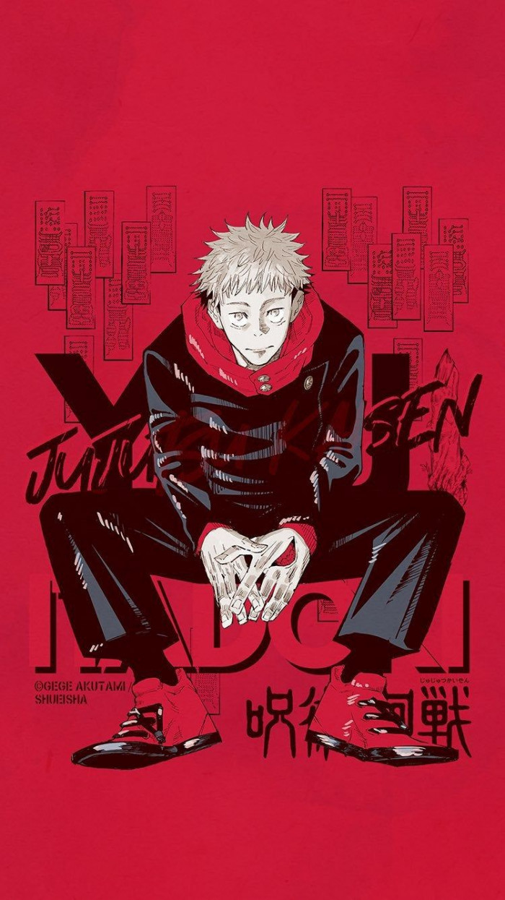

Jujutsu Kaisen
Jujutsu Kaisen (Jepang: 呪術廻戦, terj. har. "Pertarungan Sihir") adalah sebuah seri manga shōnen asal Jepang yang ditulis dan diilustrasikan oleh Gege Akutami. Manga ini dimuat berseri dalam majalah Weekly Shōnen Jump terbitan Shueisha sejak Maret 2018, dan telah diterbitkan menjadi dua puluh empat volume tankōbon per Oktober 2023.
Viz Media menerbitkan tiga bab pertamanya untuk program "Jump Start" mereka. Shueisha mulai merilis Jujutsu Kaisen dalam bahasa Inggris secara serentak dengan rilisnya di Jepang melalui platform Manga Plus sejak Januari 2019.
Manga ini telah diadaptasi menjadi seri anime yang diproduksi oleh MAPPA, dan ditayangkan sejak bulan Oktober 2020.
Yūji Itadori adalah seorang siswa SMA dengan atletisitas yang tidak wajar yang tinggal di Sendai bersama kakeknya. Ia sering menghindari Klub Lari karena keengganannya pada bidang atletik, meskipun dia memiliki bakat bawaan untuk olahraga tersebut. Sebaliknya, dia memilih untuk bergabung dengan Klub Penelitian Ilmu Gaib, agar dirinya dapat bersantai dan bergaul dengan para seniornya. Setiap hari, Yūji meninggalkan sekolah pada pukul 17.00 untuk mengunjungi kakeknya di rumah sakit. Ketika dia mengunjunginya, kakeknya memberikan dua pesan kuat kepada Yūji, yaitu "selalu membantu orang" dan "mati dikelilingi orang".
Setelah kematian kakeknya, Yūji menafsirkan pesan-pesan tersebut sebagai satu pernyataan—bahwa setiap orang berhak mendapatkan "kematian yang layak". Ia kemudian berpapasan dengan Megumi Fushiguro, seorang penyihir (巫, Shaman) yang bertanya kepadanya tentang jimat kutukan tingkat tinggi di sekolahnya yang baru-baru ini ditemukan Yūji. Senior-seniornya di Klub Penelitian Ilmu Gaib membuka segel dari jimat tersebut dan menemukan jari yang telah membusuk, yang menarik roh Kutukan—makhluk mirip monster yang muncul melalui emosi negatif dan diperkuat dengan mengonsumsi kekuatan sihir yang ada pada penyihir atau jimat semacam itu.
Yūji yang tidak mampu mengalahkan roh Kutukan itu karena tidak memiliki kekuatan sihir, menelan jari tersebut untuk melindungi Megumi dan teman-temannya dan menjadi wadah dari Sukuna, roh Kutukan tingkat tinggi yang kuat. Karena sifat jahat Sukuna, semua penyihir ditugaskan untuk memusnahkannya dengan segera. Namun, meski dirasuki, Yūji masih mampu mengendalikan tubuhnya. Melihat hal tersebut, Satoru Gojō selaku guru Megumi, memutuskan untuk membawanya ke SMA Jujutsu Metropolitan Tokyo untuk mengusulkan rencana kepada atasannya—menunda hukuman mati Yūji sampai dia mengonsumsi semua jari Sukuna sampai habis, sebelum mereka membunuhnya sekali dan untuk selamanya.